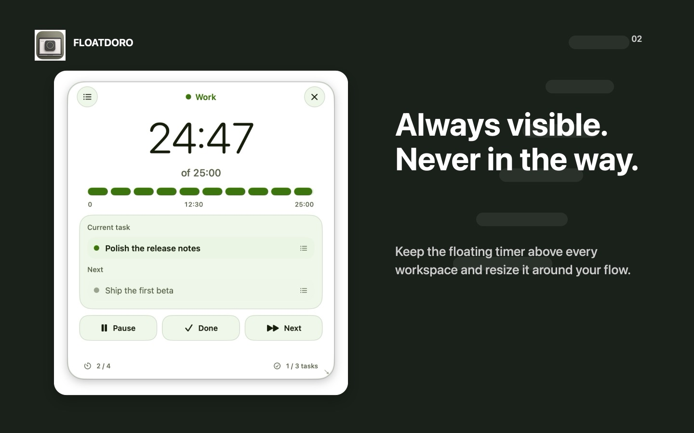

Focus that stays visible.
A native Pomodoro timer for Mac with a floating window, a lightweight task queue, and private on-device history.

Above your work
Keep the countdown and current task visible across every workspace without switching away from what you are doing.
Local by design
No account, analytics, advertising, or tracking. Your tasks and focus history remain on your Mac.
Built for macOS
Floatdoro is a native menu bar productivity app for Apple silicon Macs running macOS 14 or later.